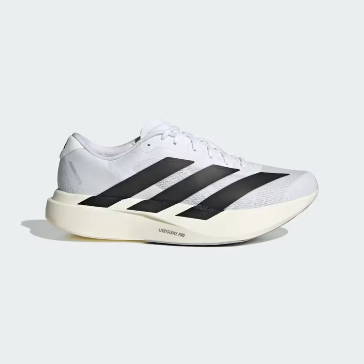

Adidas Adizero Evo SL adalah super trainer ringan dan serbaguna yang terinspirasi dari sepatu pemecah rekor, Adizero Pro Evo 1, didesain untuk kecepatan harian dan gaya hidup. Menggunakan busa full Lightstrike Pro untuk responsivitas maksimal tanpa plat karbon, menjadikannya pilihan nyaman untuk latihan cepat. Adidas Adidas +3 Berikut adalah detail utama Adidas Adizero Evo SL: Midsole & Bantalan: Menggunakan material foam premium Lightstrike Pro yang empuk dan responsif, dengan ketebalan tumit 37 mm dan depan 29,2 mm. Berat: Sangat ringan, sekitar 215,6 gram (untuk ukuran 42) hingga 188g (ukuran UK 5.5). Desain & Fit: Upper mesh tekstil yang bernapas, dengan TPU untuk struktur, serta desain toebox yang memberikan ruang gerak nyaman. Outsole: Menggunakan material Continental Rubber tipis untuk traksi andal, dengan desain yang dioptimalkan untuk mengurangi bobot. Karakteristik: Stabil untuk lari cepat maupun santai, cocok untuk latihan harian (daily trainer)